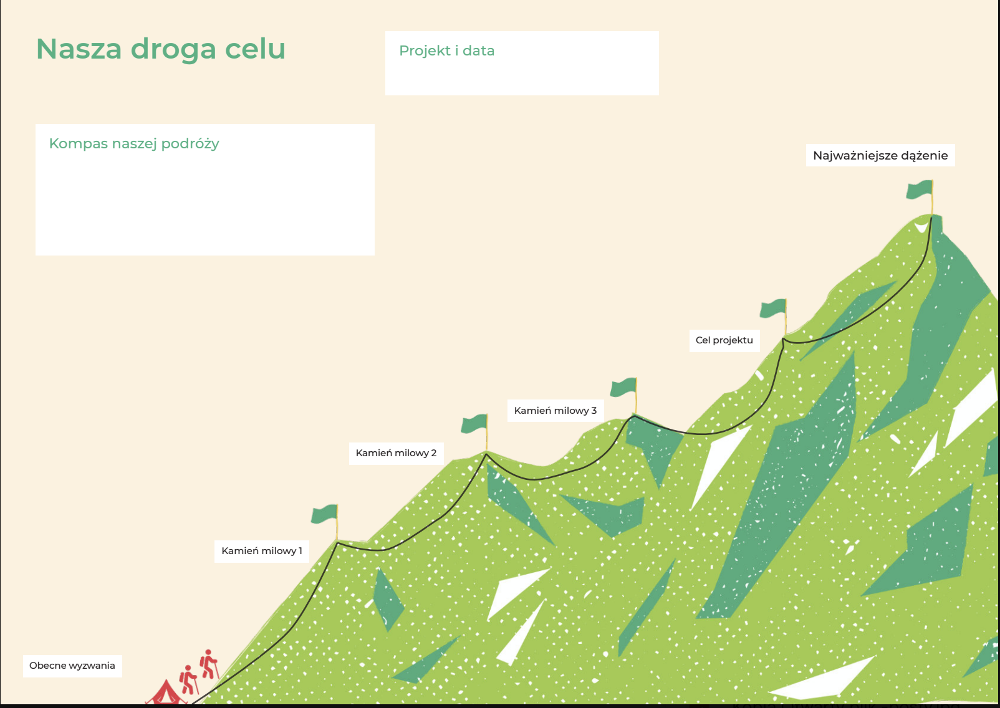

Nasza droga do celu – ćwiczenie, które zamienia duży cel w konkretną drogę
{{ g }}
Cel może być jasny, a mimo to każdy członek zespołu może inaczej wyobrażać sobie drogę do jego osiągnięcia.
Nasza droga do celu to ćwiczenie, które pozwala spojrzeć na projekt jak na wyprawę. Zespół określa miejsce, z którego startuje, kolejne kamienie milowe oraz cel, do którego zmierza.
W materiale 4change wykorzystujemy metaforę górskiej wędrówki: najwyższy szczyt oznacza najważniejsze dążenie, a mniejsze szczyty – kolejne kamienie milowe.

Cel ćwiczenia
Uporządkowanie dużego celu i przełożenie go na konkretne etapy, dzięki którym zespół może sprawdzać postęp i odpowiednio wcześnie reagować, jeśli zaczyna zbaczać z wyznaczonej drogi.
Jak przeprowadzić ćwiczenie?
Narysujcie drogę prowadzącą od punktu startowego do najwyższego szczytu. Możecie zrobić to na dużym arkuszu albo wirtualnej tablicy.
Obecne wyzwania
Zacznijcie od miejsca, w którym jesteście dzisiaj.
Co już mamy? Z czym się mierzymy? Co wymaga rozwiązania? Co sprawia, że w ogóle rozpoczynamy tę „podróż”?
Cel projektu
Określcie, dokąd chcecie dotrzeć. Cel powinien być na tyle konkretny, aby zespół potrafił rozpoznać moment jego osiągnięcia.
Najważniejsze dążenie
Odpowiedzcie sobie również na pytanie: po co chcemy osiągnąć ten cel?
To pozwala zespołowi zobaczyć nie tylko zadanie do wykonania, ale jego znaczenie.
Kamienie milowe
Wyznaczcie 3–5 punktów kontrolnych na drodze do celu.
W materiale 4change szablon prowadzi od obecnych wyzwań przez kolejne kamienie milowe, cel projektu aż do najważniejszego dążenia.
Przy każdym kamieniu warto doprecyzować: Co musi się wydarzyć? Po czym poznamy, że ten etap został osiągnięty? Kto odpowiada za działania?
Jaki efekt daje ćwiczenie?
Zespół wychodzi ze spotkania nie tylko ze wspólnym celem, ale również ze wspólnym rozumieniem drogi do jego osiągnięcia.
Ćwiczenie pozwala zobaczyć zależności pomiędzy kolejnymi etapami projektu, ustalić odpowiedzialność i stworzyć punkty kontrolne, dzięki którym łatwiej monitorować postęp.
{{ f.value }}
Pomożemy Wam zamienić duży cel w konkretne etapy i wspólną drogę zespołu.